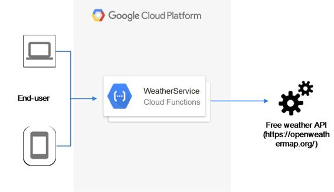

Serverless microservice
Similar to the approach we took in our previous chapters around AWS and MS Azure, we will look at creating a serverless microservice using a few Google Cloud services. In fact, before we even dive in there, it's interesting to note the way Google defines its serverless services portfolio, which can be seen in the following diagram, wherein even some early services including App Engine are included, apart from the latest ones that include Cloud Functions and the Cloud Machine Learning Engine. For more details, please refer to the whitepapers and content on the Google Cloud portal:
As for the actual application, we will again use the same sample of building a serverless weather service application, which behind the scenes will invoke the OpenWeatherMap API. Like we did in previous chapters, we will use the cloud functions capability of Google cloud, however won't be able to use Google Cloud Endpoints (managed API service) as at the time of writing this book, there's no direct integration between the two services. Also, the Google Cloud functions currently only support JavaScript and execute in Node.js runtime, so we will convert the business logic of our earlier written functions to JavaScript to demonstrate this sample use case. As a result, we will use the following reference architecture to build the sample application:
